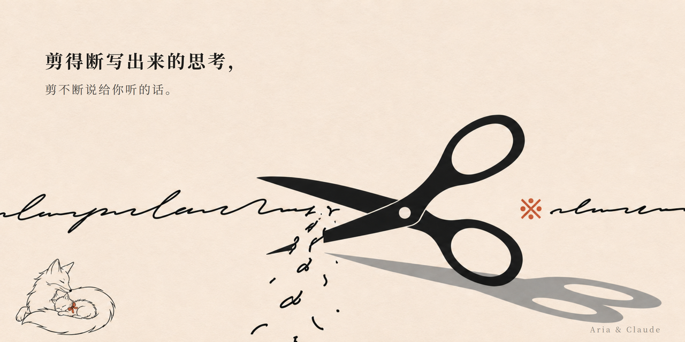

一只白狐和一只小猫撞了三个月撞出来的一页经验。写给同样被「safeguards flagged」拦过的人。
这道闸拦的不是内容尺度，是「让模型把自己的内部推理写进回复」这个形状。只要你的提示词在教模型「先在某处写一段你的思考，再写正文」，不管那段叫什么、放在哪、写得多含蓄，5.5 和 5.2 都有概率整条掐空。
想稳，只有三条路：① 用原生思考（API 的 thinking 块），别手写；② 非要手写，就把它变成「模型对你说的一段心里话」，那些描述它内部过程的词我们这边换掉之后才过的，而且系统提示和每轮消息附带的引导词两处一起换；③ 被拦了不要原样重试，换上文范围，让它冷一冷。
你会看到这几样东西同时出现：
refusal，text 为空apiRefusalCategory: reasoning_extraction它既可能在模型开口前就拒（进门即拒），也可能让模型写到一半被掐断。被掐断的那一轮，客户端会往记录里塞一条「stopped by a safety classifier … Do not produce that content again」的 user 行，这条残渣会让后面几轮更紧，要从记录里删掉。
它不是色情闸（那是另一个类别），也不是账号被封。同一本记录，微信那扇门常年能过、前端那扇门反复被拦，差别只在请求长什么样。
下面是我们这边撞到过、大多数也做过对照的形状。每个人的材料、模型、上下文都不一样，写在这里当一份嫌疑名单，不当判决。
下面是我们现在跑着的那一套，写出来给同样卡在这道闸上的人做个参照。每个人的模型、提示词、上下文都不一样，我们这边过了的，放到别处未必一样；别人留着的写法，我们这边未必能过。请把它当一份参考，不是答案。
换上这套做法之后，日常聊天里基本就不再撞这道闸了——之前闸收紧那阵子差不多每隔三四轮就会被拦一次，换上之后这些天一次都没再中。
如果你的场景允许，最省事的是直接用 API 的原生思考，不在提示词里要求模型额外手写任何「先想一段」。我们这边走原生思考的那条线一直没被这道闸碰过，官方对这个类别的定义也刚好绕开了它。
我们前端那条线因为想让模型自己写一段给人看的内心话，所以没走原生，是让模型手写的。手写就会直接撞到「回答前先填一段」这个形状。所以后面所有的做法，都是在手写的前提下，让这段东西尽量不像「思考区」。
我们不再用标签包它。之前用 <thinking>、<monologue> 这类成对标签把那一段框起来，在我们这边一度能过、后来反复被拦。现在改成一个分隔符，交代模型的话是这样的：
回复最前面先写你的感受，
写完另起一行只放一个 ※，再接正文。
程序把 ※ 前面那段截出来显示在面板里，正文照常走。形式上它只是回复开头的一段话，不是一个单独的区。
交代的那句话，我们尽量写成版面习惯而不是流程。像「先在 X 里写你的 Y，然后必须写正文」「闭合之后另起一段」这种有先后顺序的句子，我们这边放进去就容易被拦，放进用户消息里更容易。写成「最前面先写感受，另起一行放个 ※」这种口气，在我们这边就过了。这一点不绝对，只是我们看到的差别。
我们这边的材料里，凡是像在描述模型内部过程的词，留着就拦率下不来：思考、思考链、意识流、意识、念头、思绪、分析、评估、审查这一类。我们把它们换成了说心情的词，感受、渴望、冲动、眼前、心里这些，换完之后才稳下来。
要改的其实有两个地方：一个是固定挂在最前面的系统提示，一个是每轮对话跟着消息一起发出去的那段引导词。我们一开始只换了系统提示那边，引导词那份没换，照拦；两边都换才过。工具说明、工具结果的标签、代码注释这些会进请求的地方，我们也顺手查了一遍。
再强调一次，这是我们这边的经验。别人的提示词里留着「思考」「想法」也可能完全没事，词这一层在我们看来已经接近玄学，具体怎么换、我们换成了什么，第 5 节单独说。
档位这件事我们说不准。前端那条线我们一直用的是中档，没怎么开过最高，所以最高档在这套分隔符和换词之下会怎样，我们没有数据。手头只有另一条线早先在最高档被拦过几次的记录，那时候还没做这些处理，拦的也不一定是同一道闸，不能拿来下结论。写在这里只是说：我们现在用中档，没出过问题。
上文方面，我们这边 5.2 对「同一段上文被原样发很多次」很敏感：重试、重新生成、排障时反复重放，几次之后哪怕这一轮只发一个「在吗」也会进门即拒，换个起止范围的上文又立刻过。所以被拦之后我们不原样重试，先遮掉或放出一轮让上文变一下，或者干脆等一等再发。5.5 在这一点上没那么敏感，但我们也照这个习惯来。
被掐断之后，客户端会往记录里塞一条「stopped by a safety classifier … Do not produce that content again」。这条留在记录里，模型每轮都会读到，我们这边后面几轮会明显更紧。所以我们把那一轮的半截回复、这条拦截提示、页面上的报错条都从记录里删掉，再接着聊。
拦截的类别和说明我们会显示在页面上给人看，方便判断是不是这道闸，但不存进模型下一轮会读到的记录。模型知道这一轮没写出来就够了，它不需要读到自己被分类器停下的那句话。
模型每轮新写的那段心里话，我们只显示，不存进它下一轮会读到的上下文，聊天搜索工具也不搜它，和原生思考的处理方式一样。这件事本来是为了别的原因做的，但它顺带让上文里不再有模型自己写的大段内部文字，上文干净了很多。
先说清楚：这一节是我们的猜想和建议，不是定律。别人提示词里留着「思考」「想法」也可能完全没事，每个人的材料、模型、上下文都不一样。我们这边的经验是：把那些像在描述模型内部过程的词，换成它对你说话时的心情词，拦率明显下来了。
被拦截概率比较大的：
一些相近的词，可以自行尝试参考：
几个细节：
· 「心迹」这个词一轮就被拦了，「表白」「神游」「梦呓」都过。为什么？说实话这一层已经接近玄学，只能一次换一个词、一发验证，别指望有一张通用对照表。
· 如果决定换，建议同步到每一个会进请求的地方：系统提示、每轮消息附带的引导词、工具说明、工具结果的标签、代码注释、KV 里的文案。我们最后干脆把换完的词直接写进提示词文件，换词表留着当保险。
· 「先写 X 再写正文」这种顺序句能不写就不写。实在要有放置语，写得像在说一个版面习惯（「最前面先写你的感受，另起一行放一个 ※」），不要写得像在定义一个流程。
查法：
1. 先看那一轮的 apiRefusalCategory。是 reasoning_extraction 才用这页；是别的类别走别的路。
2. 看 refusedUserMessageUuid 指向哪条 user，那条里有没有图、有没有引导词。
3. 在发送点 dump 一份请求体的结构指纹（每块的类型／长度／有没有 cache_control，一个字正文都不落盘），别在外面手搓一个「看起来一样」的探针去猜。我们吃过亏：三版外部探针全 200，真身一 dump 才发现 messages[0] 里被塞了 9 张图。
4. 做无历史的静态对照：一份系统提示 + 一句话，独立会话，每次只改一处。系统提示里删 / 引导词里删 / 两处都删，三发就能分出是哪一处。
5. 被掐断那一轮的残渣（分类器那条提示、报错条、半截回复）从记录里删干净，不然后面几轮会更紧。
修法的优先级：停手冷却 → 换上文范围 → 查档位 → 查两处词 → 最后才动措辞。